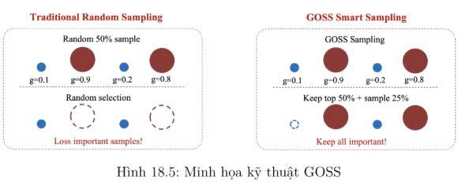
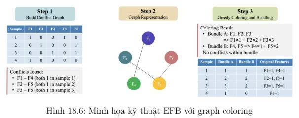

I. Tổng quan về LightGBM
LightGBM (Light Gradient Boosting Machine) là một biến thể của GBDT (Gradient Boosting Decision Tree) do Microsoft giới thiệu, tập trung vào việc tối ưu hóa tốc độ huấn luyện và khả năng mở rộng trên dữ liệu lớn. Thư viện này đặc biệt phù hợp với các bài toán có số lượng mẫu và đặc trưng rất lớn, nhờ hai kỹ thuật then chốt: Gradient‑based One‑Side Sampling (GOSS) và Exclusive Feature Bundling (EFB).
- GOSS: ưu tiên giữ lại các mẫu có độ lớn gradient cao, lấy mẫu ngẫu nhiên một phần từ phần còn lại, rồi tái trọng số khi ước lượng độ lợi thông tin (information gain) để hạn chế sai lệch.
- EFB: thay vì dùng các phép biến đổi như PCA để giảm chiều, LightGBM hạ chi phí theo số đặc trưng bằng cách gộp những đặc trưng hầu như không cùng kích hoạt (hiếm khi đồng thời có giá trị khác 0) thông qua bài toán tô màu đồ thị (graph coloring).
II. Gradient‑based One‑Side Sampling (GOSS)

Ý tưởng: Độ dốc (gradient) của từng mẫu dữ liệu thể hiện mức độ “chưa được giải quyết” của mô hình. Những điểm có gradient nhỏ đóng góp rất ít vào cập nhật tham số, nên có thể giảm tần suất xuất hiện của chúng mà vẫn giữ nguyên hướng học. LightGBM khai thác điều này bằng Gradient-based One-Side Sampling (GOSS): giữ trọn các mẫu có gradient lớn, chỉ lấy ngẫu nhiên một phần nhỏ trong nhóm gradient thấp, rồi hiệu chỉnh trọng số để không làm sai lệch phép đánh giá split gain.
Quy trình GOSS
- Sắp xếp các mẫu theo độ lớn gradient \(|g_i|\), giữ lại \(a \cdot n\) điểm có \(|g_i|\) lớn nhất (thường \(a = 0.2\)).
- Lấy ngẫu nhiên \(b \cdot n\) điểm từ phần còn lại (thường \(b = 0.1\)).
- Nhân trọng số các mẫu lấy ở bước (2) với hệ số \(\frac{1-a}{b}\) để tăng cường đóng góp của các mẫu gradient nhỏ, tránh mất cân bằng.
- Huấn luyện cây quyết định trên tập dữ liệu gộp lại (các mẫu giữ lại + các mẫu ngẫu nhiên đã được tái trọng số).
Lợi ích: Giảm mạnh số mẫu phải xử lý khi xây dựng histogram (từ \(n\) xuống còn \(a \cdot n + b \cdot n\)), nhưng vẫn bảo toàn ước lượng Gain gần đúng nhờ tái trọng số. Điều này đặc biệt hữu ích khi số mẫu rất lớn (hàng triệu).
III. Exclusive Feature Bundling (EFB)

Ý tưởng: Nhiều đặc trưng rời rạc (sparse features) hầu như không cùng khác 0 (ví dụ: one‑hot encoding). Ta có thể gom chúng vào một “bundle” duy nhất, sao cho mỗi bản ghi chỉ kích hoạt đúng một (hoặc rất ít) thành phần trong bundle. Khi đó thay vì xây histogram cho từng đặc trưng riêng lẻ, ta chỉ xây cho các bundle.
Quy trình EFB
- Xây dựng đồ thị xung đột giữa các đặc trưng: hai đặc trưng có xung đột nếu chúng cùng khác 0 trên bất kỳ mẫu nào.
- Thực hiện greedy bundling với một ngưỡng xung đột nhỏ \(\gamma\) (cho phép một số xung đột nhỏ để tăng số lượng bundle).
- Map các đặc trưng trong cùng một bundle vào các dải bin không chồng lấn (bằng cách cộng offset).
Lợi ích: Độ phức tạp xây dựng histogram giảm từ \(O(N \cdot F)\) xuống \(O(N \cdot B)\), với \(B \ll F\) (\(F\) là số đặc trưng ban đầu, \(B\) là số bundle sau khi gom). Nhờ đó LightGBM xử lý được các bộ dữ liệu có hàng trăm nghìn đặc trưng (ví dụ click‑through rate prediction) mà không bị quá tải bộ nhớ.
IV. Các bước huấn luyện LightGBM cho bài toán Hồi quy
Dưới đây là quy trình chi tiết huấn luyện mô hình LightGBM cho bài toán hồi quy (ví dụ với loss L2 – Mean Squared Error). Các bước có tích hợp GOSS và EFB.
Bước 0: Tiền xử lý đặc trưng (đặc trưng của LightGBM)
- Lượng tử hóa (binning): Mỗi đặc trưng liên tục được chia thành \(K\) bin (thường \(K = 255\)). Việc này giúp việc xây dựng histogram rất nhanh.
- (Tuỳ chọn) EFB: Gộp các đặc trưng hiếm khi cùng khác 0 để giảm số chiều.
Bước 1: Khởi tạo
Khởi tạo dự đoán ban đầu bằng trung bình của biến mục tiêu \(y\) (phù hợp với L2 loss).
Bước 2: Tính gradient và hessian tại node hiện tại
Với L2 loss: \(L(y, \hat{y}) = \frac{1}{2}(y - \hat{y})^2\), ta có:
Tại node \(T\) (tập mẫu thuộc node đó), tổng gradient và tổng hessian là:
Bước 3: (Tuỳ chọn) Áp dụng GOSS
- Giữ lại tất cả các mẫu có \(|g_i|\) lớn nhất (top \(a \cdot n\) mẫu).
- Lấy ngẫu nhiên \(b \cdot n\) mẫu từ phần còn lại (các mẫu gradient nhỏ).
- Gán trọng số cho các mẫu gradient nhỏ được lấy là \(\frac{1-a}{b}\) để bù đắp.
- Chỉ sử dụng tập mẫu đã chọn để xây dựng cây (các mẫu gradient lớn + mẫu gradient nhỏ đã lấy).
Bước 4: Xây dựng histogram và chọn split
Độ lợi (Gain) khi phân tách một node thành hai node con L và R (với dữ liệu đã được GOSS) được tính bởi:
Trong đó \(\lambda\) là tham số regularization L2, \(\gamma\) là ngưỡng cắt tỉa (min_split_gain). Chọn split có Gain lớn nhất.
Lưu ý: Nhờ histogram, việc tính \(G_L, H_L, G_R, H_R\) cho mỗi bin có độ phức tạp \(O(\#\text{bins})\) thay vì \(O(n)\).
Bước 5: Mở rộng cây theo chiến lược leaf‑wise (best‑first)
- Khởi tạo cây chỉ với node gốc.
- Đưa các node con vào hàng đợi ưu tiên theo Gain tiềm năng.
- Lặp lại bước 2–4 trên node có Gain lớn nhất trong hàng đợi.
- Dừng khi không còn Gain dương hoặc đạt đến giới hạn
num_leaves(số lá tối đa) hoặcmax_depth.
Bước 6: Tính giá trị tại lá (Newton step)
Giá trị dự đoán của mỗi lá (output) được tính tối ưu dựa trên gradient và hessian:
Với L2 loss, \(v_L = -\frac{\sum (g_i)}{|T| + \lambda}\) (chính là âm của tổng gradient chia cho số mẫu + \(\lambda\)).
Bước 7: Cập nhật dự đoán
Sau khi xây dựng cây thứ \(m\), dự đoán được cập nhật theo công thức:
trong đó \(v_L(x)\) là giá trị lá mà mẫu \(x\) rơi vào, \(\eta\) là learning rate.
Bước 8: Dự đoán cuối cùng
Sau khi xây dựng đủ \(M\) cây, dự đoán cho mẫu \(x\) là:
Đây chính là tổng có trọng số của tất cả các cây.
📌 Ví dụ code Python (LightGBM cho hồi quy)
import lightgbm as lgb
from sklearn.datasets import make_regression
from sklearn.model_selection import train_test_split
from sklearn.metrics import mean_squared_error
# Tạo dữ liệu
X, y = make_regression(n_samples=100000, n_features=20, noise=0.1)
X_train, X_test, y_train, y_test = train_test_split(X, y, test_size=0.2)
# Tạo dataset LightGBM
train_data = lgb.Dataset(X_train, label=y_train)
test_data = lgb.Dataset(X_test, label=y_test, reference=train_data)
# Tham số
params = {
'objective': 'regression',
'boosting': 'gbdt',
'num_leaves': 31,
'learning_rate': 0.05,
'feature_fraction': 0.9,
'bagging_fraction': 0.8,
'bagging_freq': 5,
'verbose': 0,
'lambda_l2': 1e-5
}
# Huấn luyện
model = lgb.train(params, train_data, valid_sets=[test_data],
num_boost_round=100, callbacks=[lgb.early_stopping(10)])
# Dự đoán
y_pred = model.predict(X_test)
print("MSE:", mean_squared_error(y_test, y_pred))V. So sánh LightGBM với XGBoost
- Tốc độ huấn luyện: LightGBM nhanh hơn nhờ GOSS (giảm số mẫu) và EFB (giảm số đặc trưng), cùng với histogram và leaf‑wise growth.
- Bộ nhớ: LightGBM tiết kiệm hơn do lưu trữ đặc trưng dưới dạng bin (int8) và chỉ lấy mẫu con.
- Độ chính xác: Nhìn chung tương đương, có khi LightGBM tốt hơn trên dữ liệu rất lớn, nhưng dễ overfit hơn nếu không điều chỉnh kỹ
num_leavesvàmin_data_in_leaf. - Xử lý missing values: Cả hai đều tự động xử lý.
- Tính năng đặc biệt: LightGBM hỗ trợ categorical features (chỉ cần khai báo
categorical_feature) mà không cần one‑hot encoding.
Khuyến nghị: Với dữ liệu trung bình (hàng chục nghìn mẫu, vài trăm đặc trưng), XGBoost và LightGBM đều tốt. Với dữ liệu lớn (hàng triệu mẫu, hàng nghìn đặc trưng), LightGBM vượt trội về tốc độ và bộ nhớ. Cần đặc biệt chú ý tránh overfit khi dùng leaf‑wise bằng cách giới hạn num_leaves (thường 15–255) và sử dụng min_data_in_leaf (10–100).
VI. Kết luận
LightGBM là một trong những thư viện boosting mạnh nhất hiện nay, đặc biệt thích hợp cho các bài toán với dữ liệu quy mô lớn. Nhờ các kỹ thuật GOSS và EFB, nó đạt được tốc độ huấn luyện và hiệu quả bộ nhớ vượt trội so với XGBoost trong nhiều tình huống. Các bước huấn luyện được trình bày ở trên giúp hiểu rõ cơ chế hoạt động bên trong của LightGBM, từ khởi tạo, xây dựng histogram, chọn split leaf‑wise, đến cập nhật dự đoán cuối cùng. Với những ai cần một giải pháp nhanh, nhẹ và chính xác cho dữ liệu dạng bảng, LightGBM là lựa chọn hàng đầu.